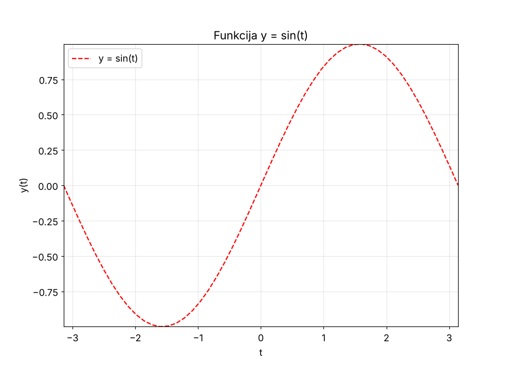
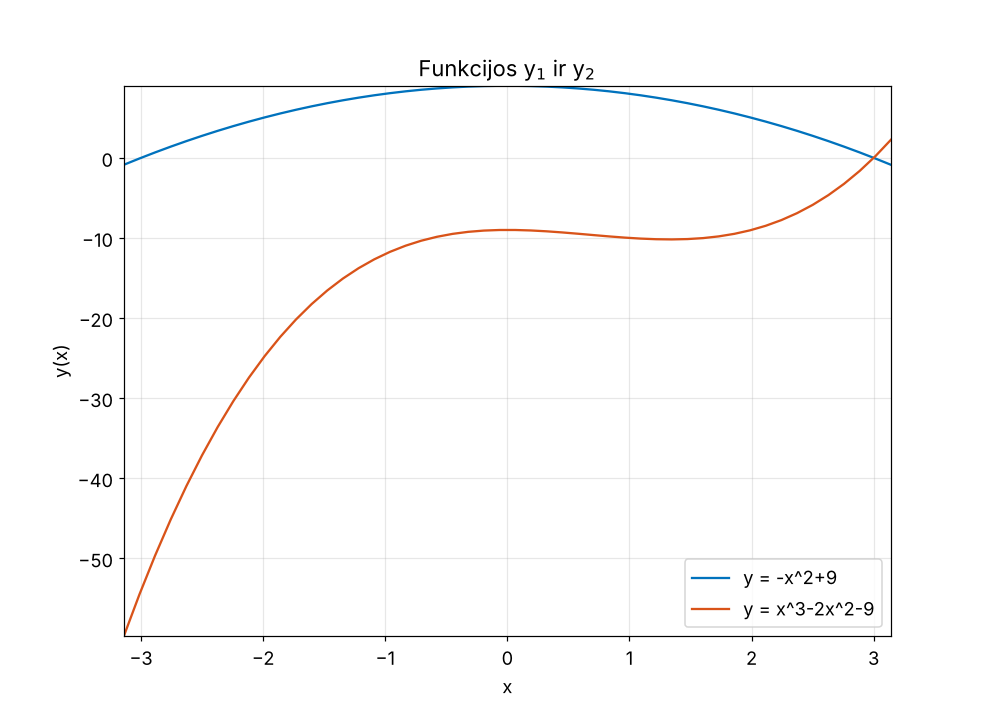
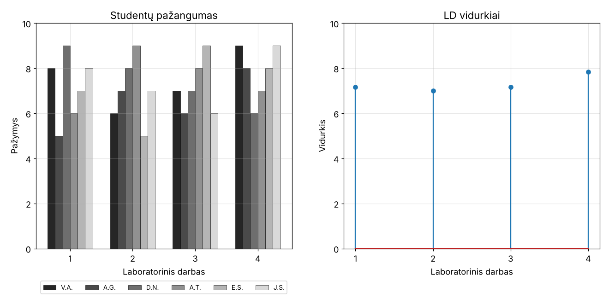
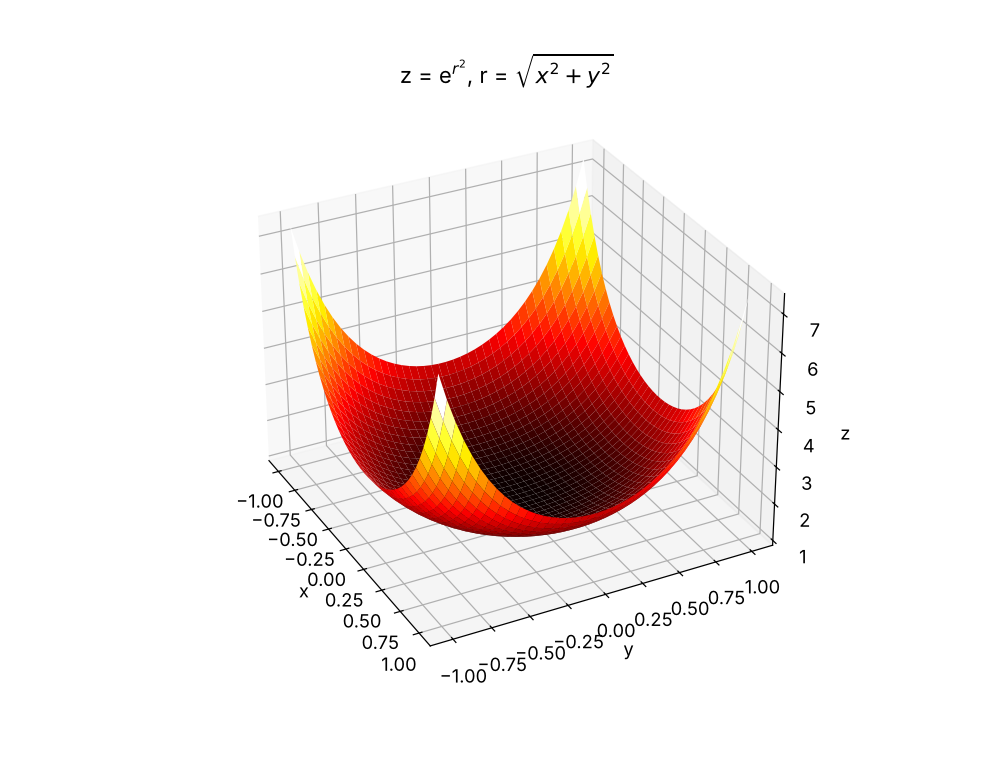
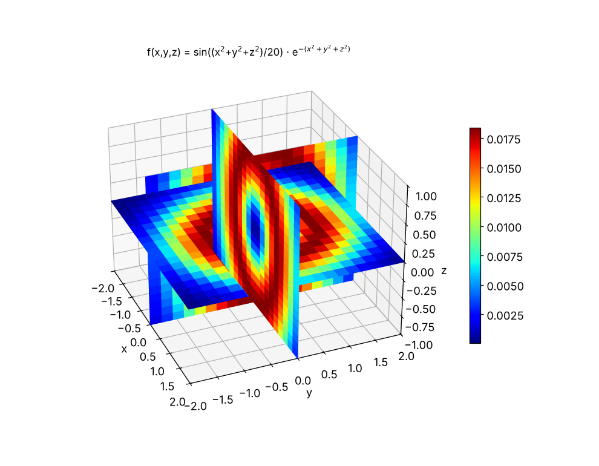
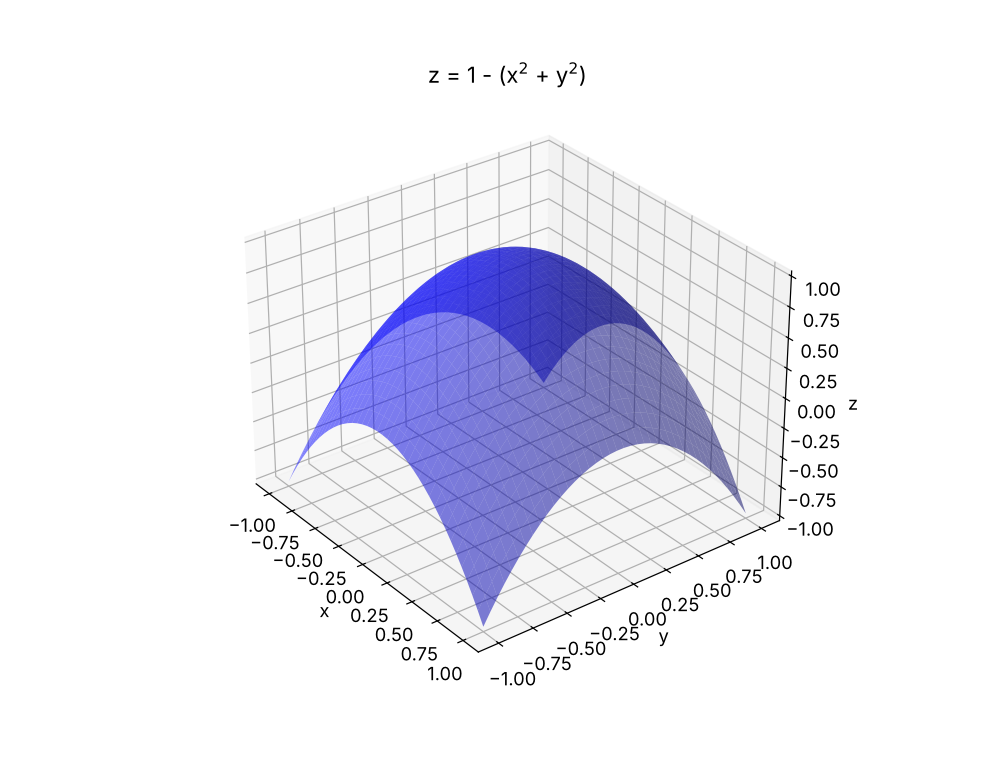

Atlikti darbai
MATLAB laboratoriniuose darbuose sukurti grafikai: dvimatis (LD3) ir trimatis (LD4) rezultatų atvaizdavimas.
- Visi
- 2D grafikai (LD3)
- 3D grafikai (LD4)


Funkcija y = sin(t)
LD3 · 50 taškų nuo −π iki π, raudona brūkšninė linija, ašių ribos pagal min/max reikšmes.


Dvi funkcijos viename grafike
LD3 · y = −x² + 9 ir y = x³ − 2x² − 9, su legenda ir tinkleliu.


Studentų pažangumas ir LD vidurkiai
LD3 · 6 studentų pažymiai stulpeline diagrama ir kiekvieno LD vidurkis diskrečiu formatu.


Paviršius z = e^(r²)
LD4 · meshgrid ir surf, spalvų paletė hot, shading interp, pasukta 10° kampu.


Tūrio grafikas su pjūviais
LD4 · f(x,y,z) = sin((x²+y²+z²)/20)·e^−(x²+y²+z²), trys pjūviai per x = 0, y = 0, z = 0.


Permatomas paraboloidas
LD4 papildoma · z = 1 − (x² + y²), mėlynas paviršius su alpha(0.5).